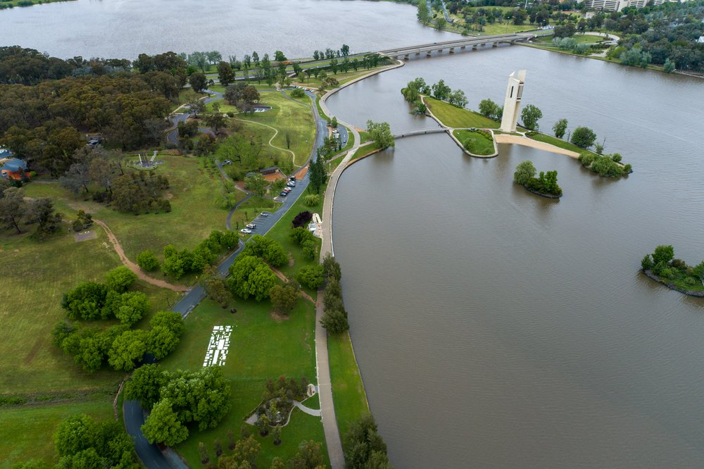

4th Edition Returning in 2022
contour 556 returns for the 4th edition in October 2022. We have consolidated our support with locals and others around Australia through a successful fundraising event using Chuffed that concluded in June 2021.
Canberra’s Art Biennial comprises core installations around the central lake landscape (contour 556), as well as an expanded presence in Canberra City/City Hill.